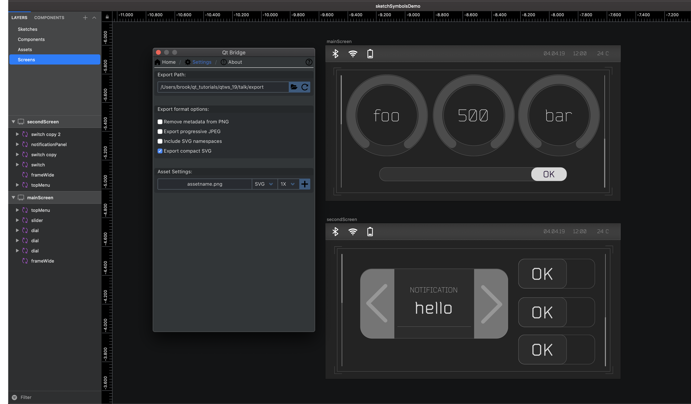

Exporting Designs from Sketch
You can use Qt Bridge for Sketch to export designs from Sketch to .metadata format that you can import to projects in Qt Design Studio.

The following topics describe setting up and using Qt Bridge for Sketch:
- Setting Up Qt Bridge for Sketch
You must install Sketch and the Qt Bridge for Sketch export tool before you can use the tool to export designs.
- Using Qt Bridge for Sketch
To get the best results when you use Qt Bridge for Sketch to export designs from Sketch, you should follow the guidelines for working with Sketch and organizing your assets.
Qt Bridge for Sketch Tutorials
For more information, read the tutorials about using Qt Bridge for Sketch that are also accessible from the Tutorials tab of the Welcome mode: